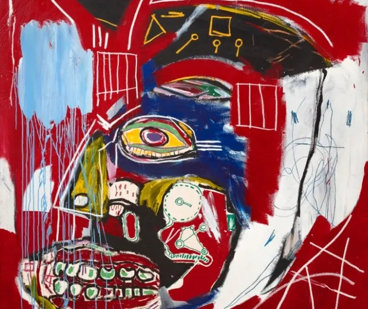

In This Case
I
Segundo Oliver Barker, especialista em arte contemporânea da Sotheby's, o valor alcançado por obras de Basquiat coloca o artista no mesmo grupo em que estão Pablo Picasso, Alberto Giacometti, Andy Warhol e Francis Bacon.
In This Case – 1983. Esta obra foi vendida por R$ 485 milhões em leilão da Christie's em Nova York. Ela mede 2 metros de altura e apresenta uma caveira em um fundo vermelho. Essa é a segunda obra do artista vendida por um valor considerável — a primeira foi a tela abaixo, arrematada por 110,5 milhões de dólares.

Fonte: dw.com